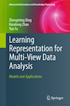
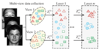

About Me
My name is Handong Zhao. I am a research scientist at Adobe Research, San Jose, CA. I obtained the Ph.D. degree at Department of Electrical & Computer Engineering, Northeastern University, Boston, MA. Before joining Adobe, I have worked at IBM Research. My current research interest includes machine learning and its applications to multimedia content analysis and marketing analytics. I was the recipient of the National Science Foundation’s Innovation Corps (I-Corps™) program award as an entrepreneurial lead.
News
- [04/21] I'm co-organizing The 3rd Workshop on Continual and Multimodal Learning for Internet of Things (CML-IOT), at IJCAI-2021. The qualified papers are planned to invited as submissions to a journal special issue.
- [03/21] One CVPR-2021 on "Document Representation Learning" and one NAACL-2021 on "KG Enrichment" got accepted.
- [01/21] One ICLR-2021 on "Learning to Deceive KG" accepted.
- [12/20] One NeurIPS-KR2ML workshop paper on "KG-based Commonsense Reasoning" accepted.
- [11/20] One paper on "Learnable Subspace Clustering" accepted by TNNLS. [arXiv].
- [09/20] One NeurIPS-2020 on "Self-Supervised Relationship Probing" accepted.
- [07/20] One ECCV-2020 on "Open Domain Image Manipulation" and one CIKM-2020 on "KG Reasoning for Recommendation" accepted.
- [06/20] One paper on "Linear Quadratic Regulator" accepted by ICML-2020.
- [05/20] One paper on "Personalized Image Retrieval" accepted by KDD-2020.
- [04/20] One survey paper on "Representation Learning for User Modeling" was accepted by IJCAI-2020.
- [03/20] Our IJCAI-2020 tutorial "Robust Multi-view Visual Learning: A Knowledge Flow Perspective" was accepted (with prof. Zhengming Ding and prof. Ming Shao).
- [02/20] One paper on "Cross-domain Document Object Detection" was accepted by CVPR-2020.
-
- [11/19] One SoCC-2019 poster and one BigData-2019 paper accepted.
- [09/19] I gave a talk on "Multi-modal Representation Learning", invited by Prof. Hongfu Liu at Brandeis.
- [07/19] One ICCV-2019 paper got accepted. Congratulations to Jiuxiang.
- [04/19] Two KDD-2019 papers accepted on the topics of "Sequential Adversarial Learning" and "Interpretable User Modeling".
- [02/19] My FIRST summer intern Jiuxiang's work on "Scene Graph Generation" got accepted by CVPR-2019.
- [02/19] Co-host (with Myra and Subrata) session "AI For System" won Top Ten Session in Adobe-TechSummit-2019. Got my first trophy at Adobe.
- [12/18] Accepted the invitation to serve as PC member for IJCAI-2019.
- [11/18] Will host a mini-summit, "Analyze, Predict, and Visualize: when RNNs meet Adobe", at Adobe-TechSummit-2019 with Sungchul Kim.
- [10/18] I have one paper accepted by WSDM-2019 (Acceptance Rate: 16.4%).
- [10/18] AAAI-2019 Tutorial "Deep Multi-view Data Analytics" was accepted (with Allan Ding and Hongfu Liu).
- [05/18] Accepted the invitations to serve as PC for NIPS-2018 and SPC for AAAI-2019.
- [03/18] One book proposal (with Allan and Prof. Raymond Fu) is accepted by Springer.
- [03/18] I accepted the invitation to serve as a member of the Program Committee for CVPR-2018 workshop on Analysis and Modeling of Faces and Gestures (AMFG).
- [02/18] I accepted the invitation to serve as a member of the Program Committee for ICMLA-2018.
- [01/18] I have one paper accepted by WACV-2018.
Selected Publications
Full List: [DBLP] [Google Scholar]- Unpaired Image Captioning via Scene Graph Alignments
- Jiuxiang Gu, Shafiq Joty, Jianfei Cai, Handong Zhao, Xu Yang and Gang Wang
- ICCV 2019. [paper]
- Towards Robust and Discriminative Sequential Data Learning: When and How to Perform Adversarial Training?
- Xiaowei Jia, Sheng Li, Handong Zhao, Sungchul Kim and Vipin Kumar
- KDD 2019
- Log2Intent: Towards Interpretable User Modeling via Recurrent Semantics Memory Units
- Zhiqiang Tao, Sheng Li, Zhaowen Wang, Chen Fang, Longqi Yang, Handong Zhao and Yun Fu
- KDD 2019 (Oral Presentation)
- Scene Graph Generation with External Knowledge and Image Reconstruction
- Jiuxiang Gu, Handong Zhao, Zhe Lin, Sheng Li, Jianfei Cai and Mingyang Ling
- CVPR 2019 [paper]
- Domain Switch-Aware Holistic Recurrent Neural Network for Modeling Multi-Domain User Behavior
- Donghyun Kim, Sungchul Kim, Handong Zhao, Ryan Rossi, Sheng Li and Eunyee Koh
- WSDM 2019 [paper]
|  |
Learning Representation for Multi-View Data Analysis Zhengming Ding, Handong Zhao and Yun Fu Springer, 2018, ISBN 978-3-030-00733-1 [book] |
|  |
Multi-View Clustering via Deep Matrix Factorization Handong Zhao, Zhengming Ding and Yun Fu AAAI Conference on Artificial Intelligence (AAAI), 2017. [paper] [code] |
Teaching/Tutorial
-
Tutorial: Robust Multi-view Visual Learning: A Knowledge Flow Perspective
Jointly organized with Zhengming Ding and Ming Shao
IJCAI-2020, virtual. -
Tutorial: Analyze, Predict and Visualize: When RNNs Meet Adobe
Jointly organized with Sungchul Kim, Fan Du and Sana Malik
Adobe Tech Summit 2019, San Francisco, CA, February 2019. -
Tutorial: Deep Multi-View Visual Data Analytics
Jointly organized with Zhengming Ding and Hongfu Liu
AAAI-2019, Honolulu, Hawaii, January 2019. -
Tutorial: Multi-view Face Representation
Jointly organized with Zhengming Ding and Yun Raymond Fu
FG-2017, Washington, D.C., May 2017.